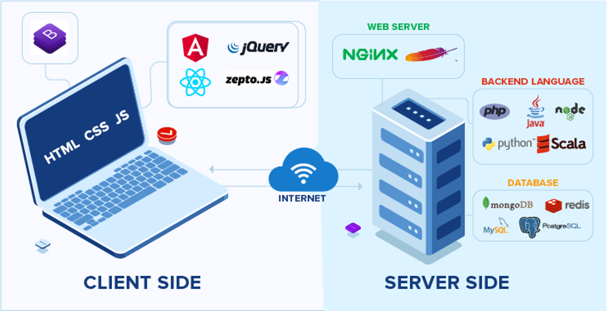
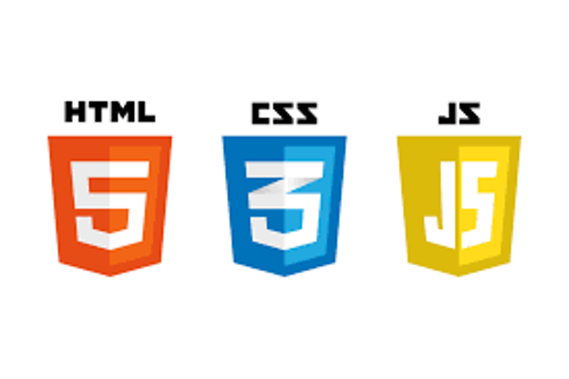
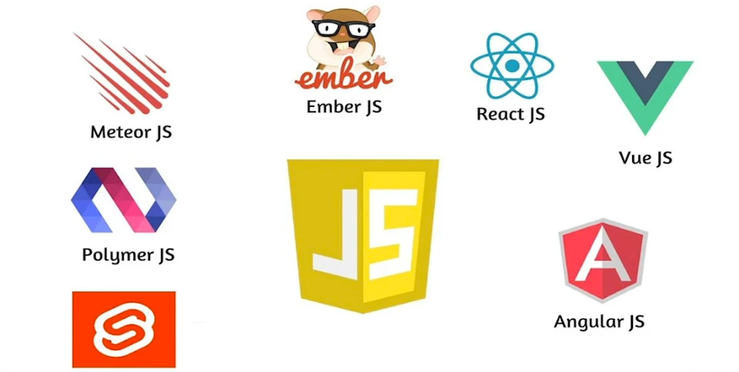

UNIT 1 - Introduction to Frontend Tools
- UNIT 1 - Introduction to Frontend Tools
- 1. Difference Between the Internet and the WWW
- 2. Web Architecture
- 3. Frontend and Backend development
- 4. Javascript Janguaje
1. Difference Between the Internet and the WWW
The Internet === The WWW ??
The Internet:
- Definition: The Internet is a global network of interconnected computers and other devices. It is the infrastructure that enables various types of digital communication and data exchange.
- History: The development of the Internet began in the late 1960s with the creation of ARPANET, a project funded by the U.S. Department of Defense. Over the following decades, it evolved into a global network with the adoption of TCP/IP protocols in the 1980s.
- Components: The Internet consists of hardware (servers, routers, cables) and software protocols (TCP/IP, HTTP). pages.
- Functions: It supports a wide range of services such as email, file transfer, instant messaging, and, of course, the World Wide Web.
- Analogy: Think of the Internet as the physical network of roads and highways.
The World Wide Web (WWW):
- Definition: The World Wide Web is a collection of information, accessible via the Internet, which is formatted and interlinked using hypertext and hypermedia. It is a service that operates on the Internet. History: The World Wide Web was invented by Tim Berners-Lee in 1989 while working at CERN. He developed the first web browser and web server, and the first website went live in 1991. The WWW rapidly grew in popularity throughout the 1990s, becoming a major part of everyday life.
- Components: The WWW consists of web pages, websites, and web browsers. Web pages are documents written in HTML and accessed through URLs.
-
Functions: It allows users to access and navigate web pages through web browsers (like Chrome, Firefox, Safari). These pages can contain text, images, videos, and links to other
-
Analogy: Think of the WWW as a specific system of paths and landmarks (websites and web pages) that exist on the physical roads and highways (the Internet).
Summary:
- Internet: The underlying global network connecting millions of computers.
- WWW: A subset of the Internet, consisting of web pages and sites, accessed through web browsers.
The WWW relies on the Internet to function, but the Internet also supports many other services beyond the Web.
2. Web Architecture
The most common architecture is client/server. - A client is a service consumer. The web browser on our device acts as a client. - A server is one or more processes hosted on machines that provide these services."

3. Frontend and Backend development
- Backend: The part of the web application that runs on the server.
- Frontend: The part of the web application that runs on the client.

3.1 Backend Development
It's the development carried out on the server side. It's responsible for the business logic and data persistence (storage in the database).
Backend languajes:
- Java
- Python
- Node.js
- Ruby
- PHP
- ASP.NET
3.2 Frontend Development
It's the part developed to run on the client (web browser). The web browser only knows how to interpret three languages:
- HTML: For the structure and content of the page
- CSS: Defines the appearance of the web page.
- JavaScript: Language that defines dynamic behavior.

Currently, it is gaining a lot of prominence due to the increased weight of web applications on the client side -> Single-page application (SPAs).
A single-page application (SPA) is a web application or website that interacts with the user by dynamically rewriting the current web page with new data from the web server, instead of the default method of a web browser loading entire new pages. The goal is faster transitions that make the website feel more like a native app. (Source: Wikipedia)
We can write the logic of our page in Vanilla JS. But the complexity of projects has made it necessary for various JavaScript frameworks and libraries to appear:
- Angular
- React
- Vue
- Svelte
- Many more and many more to come.

4. Javascript Janguaje
JS is an interpreted languaje defined as:
- Object oriented
- Imperative
- Prototype-based
- Weakly typed
- Dinamically typed
Interpreted Languajes: An interpreted language is a programming language that is generally interpreted, without compiling a program into machine instructions. It is one where the instructions are not directly executed by the target machine, but instead, read and executed by some other program. Interpreted language ranges – JavaScript, Perl, Python, BASIC, etc.